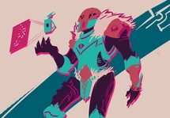
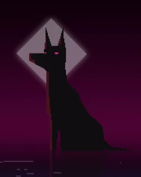
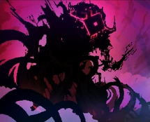
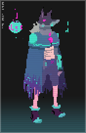

The Drifter

The Drifter, referred to on his tarot card as "The Magician", is the main playable character in Hyper Light Drifter. He is a member of the feline Blu species who has been infected with a strange terminal disease. The Drifter came to the Land of Light from the Northern Realms and travels the new continent in search of a cure.
The Guardian
The Guardian, also known as the Pink Drifter, is a major recurring NPC in Hyper Light Drifter. They are the first friendly NPC that the Drifter meets during the game.
The Jackal
The Jackal, the Ember Fox, the Fox, the Dog or possibly Anubis are the names given by fans to a mysterious black canine entity that appears and guides the Drifter in Hyper Light Drifter. The Jackal is believed by most fans to be some kind of godlike entity, possibly a reference to the Ancient Egyptian god of death and the underworld, Anubis.
Judgement
The Crystal, the Perfect Immortal Cell, the Immortal Cell, Judgement or Hal is a malevolent entity. It is the main antagonist of the Drifter and the final boss of Hyper Light Drifter, residing deep beneath the Central Town.
Alternative drifter
The Alternate Drifter is an alternate playable character that was made to be a backer-exclusive character for the first year after the game's release. As of 2017, she became available for all players, and is unlocked by completing the game as the Drifter at least once.